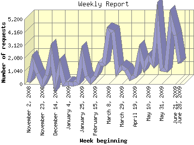

Analog 6.0
Analog 6.0The Weekly Report identifies the activity for each week within the report
time frame. Remember that one page hit can result in several server requests
as the images for each page are loaded.
Note: Depending on the
report time frame for this report the first and last week may not represent
a full seven day week, resulting in lower hits.

| Week beginning | Number of requests | Percentage of the requests | |
|---|---|---|---|
| 1. | June 28, 2009 | 1,666 | 3.13% |
| 2. | June 21, 2009 | 3,911 | 7.35% |
| 3. | June 14, 2009 | 5,119 | 9.62% |
| 4. | June 7, 2009 | 1,140 | 2.14% |
| 5. | May 31, 2009 | 1,209 | 2.27% |
| 6. | May 24, 2009 | 5,002 | 9.40% |
| 7. | May 17, 2009 | 1,670 | 3.14% |
| 8. | May 10, 2009 | 2,115 | 3.98% |
| 9. | May 3, 2009 | 1,356 | 2.55% |
| 10. | April 26, 2009 | 2,511 | 4.72% |
| 11. | April 19, 2009 | 618 | 1.16% |
| 12. | April 12, 2009 | 472 | 0.89% |
| 13. | April 5, 2009 | 1,129 | 2.12% |
| 14. | March 29, 2009 | 1,356 | 2.55% |
| 15. | March 22, 2009 | 975 | 1.83% |
| 16. | March 15, 2009 | 4,203 | 7.90% |
| 17. | March 8, 2009 | 4,344 | 8.16% |
| 18. | March 1, 2009 | 1,626 | 3.06% |
| 19. | February 22, 2009 | 1,640 | 3.08% |
| 20. | February 15, 2009 | 607 | 1.14% |
| 21. | February 8, 2009 | 213 | 0.40% |
| 22. | February 1, 2009 | 603 | 1.13% |
| 23. | January 25, 2009 | 2,231 | 4.19% |
| 24. | January 18, 2009 | 90 | 0.17% |
| 25. | January 11, 2009 | 0 | 0.00% |
| 26. | January 4, 2009 | 21 | 0.04% |
| 27. | December 28, 2008 | 0 | 0.00% |
| 28. | December 21, 2008 | 1,381 | 2.60% |
| 29. | December 14, 2008 | 69 | 0.13% |
| 30. | December 7, 2008 | 2,360 | 4.44% |
| 31. | November 30, 2008 | 715 | 1.34% |
| 32. | November 23, 2008 | 12 | 0.02% |
| 33. | November 16, 2008 | 863 | 1.62% |
| 34. | November 9, 2008 | 1,801 | 3.38% |
| 35. | November 2, 2008 | 174 | 0.33% |
Most active week beginning June 14, 2009 : 5,119 requests handled.
Weekly average: 1,612 requests handled.
This report was generated on July 5, 2009 11:22.
Report time frame November 4, 2008 08:13 to July 4, 2009 23:06.
| Web statistics report produced by: | |
| Analog 6.0 | Report Magic 2.21 |